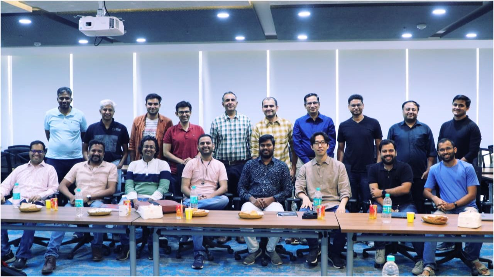
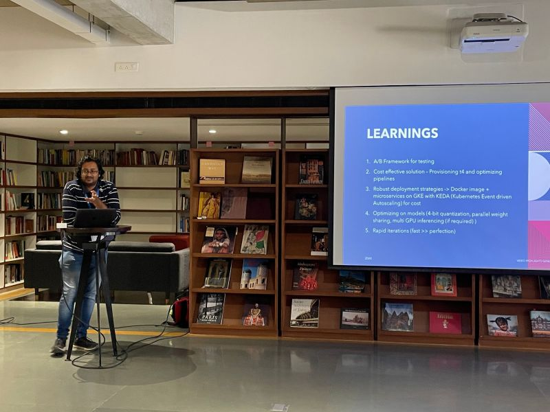
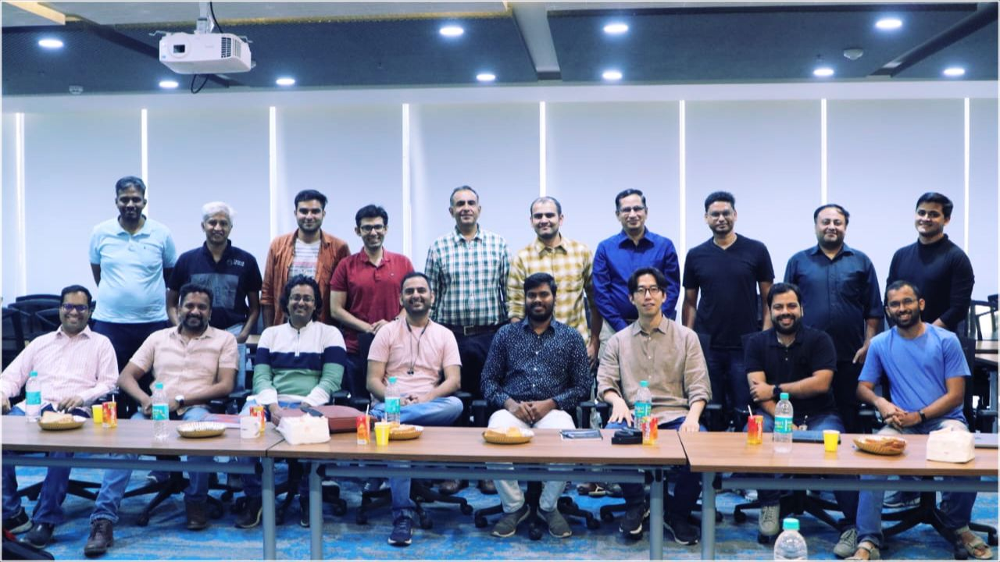
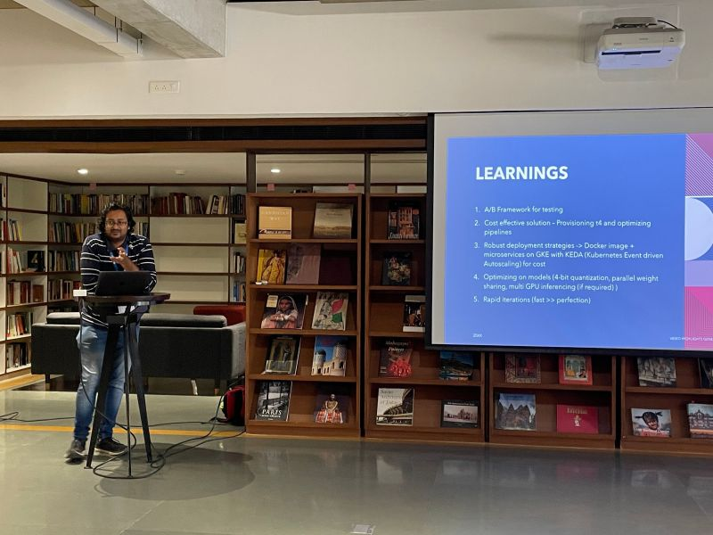

Computer Vision Enthusiast | Kaggle Competitions Expert | IIT Kharagpur
Namaste! Akshat this side. I'm a Deep Learning enthusiast passionate about crafting smart, real-world solutions through cutting-edge AI technologies.
I lead a team of 10+ engineers at Glance and work on building products using Deep Learning and Computer Vision in two broad domains - Recommendation Systems and Generative AI.
Prior to this, I worked at Societe Generale as Software Engineer, designing APIs for Datalake to store financial deals made by the company, historize the financial deals to run ML models.
I received my Bachelors Degree from the Department of Electrical Engineering, Indian Institute of Technology, Kharagpur
Please refer to my CV and my Research Profile I can be reached at : akshat |dot| ag1097 |at| gmail |dot| com, or akshat |dot| gupta [at] inmobi [dot] com
Projects and Outreach
{kind=link}
Mentor for Gen AI Exchange by Google for Glance Track
Develop an AI-powered solution that can accurately detect cancer at an early stage using [specific data type, e.g. medical images, genomic data, electronic health records]. The solution should be able to identify high-risk patients and alert healthcare providers for further screening and classify cancer types and stages with high accuracy. The goal is to improve cancer detection rates and enhance patient outcomes through early intervention
{kind=link}
Enhancing Image quality with compression - Glance Tech Blog
Using SOTA Image Superresolution, the problem statement was how to increase the quality of images while reducing image size. In other words, we want a solution which improves the image quality (sharpness, contrast, etc.) and simultaneously reducing the final size of the image, so that it improves the user experience both ways, and also reduce the cost for storing images
Generating derivataive content for Videos - Fifth Elephant Conference, Monsoon Track (2023)
Leveraging advanced tools for AI-driven multimedia processing: Faster Whisper with CTranslate2 enables swift audio transcription, while BLIP and Git handle image captioning. ViLT supports visual question answering, and color histograms aid in shot boundary detection. Text is summarized and highlighted with GPT-3.5-turbo, and Sentence-BERT embeddings with cosine similarity streamline retrieval.
Creating short clips from long form videos - Fifth Elephant Conference, Winter Track (Jan 2024)
To increase engagement on a live streaming platform, the goal is to identify the most engaging segments from videos, especially since a large number of users drop off within the first 30 seconds. Given the short attention spans of users, particularly Gen Z, the platform aims to enhance the appeal of videos trailers, and mashups. The solution involves both segment identification and the addition of external features to hook users early. A customizable framework will be developed to handle various content types and boost user retention.
Research
{kind=link}
Delineation of Ischemic Core and Penumbra Volumes from MRI using MMNet Architecture". 41st International Conference of the IEEE Engineering in Medicine and Biology Society, EMBC (2019)
Example results for the respective modalities - blue (predicted segmentation maps) and red (ground truth). Top 4 rows are for core-segmentation, while bottom 2 rows are for core + penumbra segmentation [paper]
{kind=link}
Quantitative Analysis of Brain Herniation from Non-Contrast CT Images using Deep Learning Journal of Neuroscience Methods (2022)
Example results. (a) NCCT slices; (b) right (red) and left (green) hemispheres as predicted by U-Net classifier, (c) pdML (red) and odML (green) curves, (d) iML (cyan) and odML (green) curves, and (e) iML (cyan) and pdML (red) curves superimposed on NCCT slices. In this study, a convolutional neural network (CNN) was used to predict the deformed left and right hemispheres. The proposed algorithm was validated with non-contrast computed tomography (NCCT) of (n = 45) subjects with two types of brain hemorrhages - epidural hemorrhage (EDH): (n = 5) and intra-parenchymal hemorrhage (IPH): (n = 40) [paper]
{kind=link}
MCA-DN: Multi-path Convolution leveraged Attention Deep Network for Salvageable Tissue Detection". Journal of Computers in Biology and Medicine (2022)
A novel multi-path convolution derived attention making different weighted filters in each attention convolution sub-path, with interactions on the same level of abstraction. This facilitates the network to focus on voxels with enhanced weighted activations, directing to a plausible lesion. Such a proposition of acquiring attention by embedding multiple filter paths, also prioritizes the selective activation of multi-parametric MRI sequences. The multi-path convolution assisted attention block allows the network layers to gain more insights on the input tensor, enabling the expansion of hypothesis search space with a controlled parameter count.[paper]
{kind=link}
Exploring faster computations on FPGAs, Research Intern, VDEC Lab, University of Tokyo
Implemented a custom CNN computation engine that took 7 tiled input arrays from CPU branching to 2 kernels, fetched 7 input weights from FPGA DRAM, and calculated the weighted sum. The engine was implemented on Xilinx Vertex -7 chip using MaxCompiler and Verilog software. The clock frequency for the computation engine was around 103MHz in MaxCompiler as compared to 106MHz in Verilog. [slides]
Awards and Achievements
- (June 2024) Bond 007 Award, Glance Inmobi Group - Acknowledged as the top 3% performer for consistently pursuing aspirational goals and taking strategic risks along with a cash prize of Rs. 12000
- (June 2023) Breast Cancer Detection Competition, Radiological Society of North America - Secured Silver medal in Kaggle Competition to detect and segment breast cancer in screening mammograms using vision transformers
- (Mar 2023) Gandhian Young Technological Innovation Award, Govt. of India - Awarded for work in Ischemic Stroke Segmentation
- (Dec 2022) Data Science Hackathon, Shell.ai - Won Third Place in the general edition of the hackathon (1500 USD)
- (May 2019) Best B.Tech Project Award, IIT Kharagpur - Awarded for my work in Biomedical Image Analysis along with a cash prize of Rs. 1000
- (May 2019) Saurabh Jha Memorial Cup, IIT Kharagpur - Awarded for best outstanding performance in Social and Cultural Events
- (Mar 2013) National Talent Search Examination, Govt. of India- Selected as an NTSE scholar, securing in the top 99.7 percentile of students, with a monthly scholarship of Rs 2000, till graduation